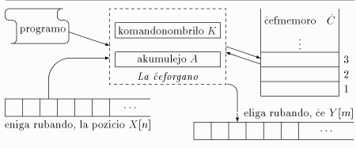

Por ĉiu komputebla funkcio f:ℕ₀m→ℕ₀ⁿ estas reĝistra aŭtomato kiu, komencinte la laboron kun la argumentoj en «la unuaj» m reĝistroj, haltas — se por la koncernaj argumentoj f estas difinita — kun la rezulto en la unuaj n reĝistroj.

La ĉefmemoro Ĉ (angle core) estas numerebla sekvenco da «reĝistroj», adreseblaj per sia naturnombra adreso.
La ĉeforgano konsistas el speciala aritmetika reĝistro, la akumulejo A, kaj komandonombrilo K. La enhavo de K estas la numero de tuj plenumota komando el la programo.
Sur la eniga rubando estas skribita teksto en finia signaro (ekz-e Latina-3a). La lega kapeto povas ekzameni, unu post la alia, la signojn de la eniga rubando, kaj sendi iliajn kodonojn al la ĉeforgano, moviĝante dekstren. La skriba kapeto povas nur skribi signojn de la sama signaro, ankaŭ moviĝante dekstren.
Komence de komputado B=1 kaj ĉiuj Ĉ[i]=0. La komandoj plenumataj dum la komputado estas listigitaj malsupre (Komandaro de ĝenerala reĝistra aŭtomato). Ni prezentas ilin en simbola maŝinkodo, kun la difino de ilia semantiko per Paskalaj ordonoj.
Evidente, la arkitekturo de tiu reĝistra aŭtomato estas tre arkaika (responda al la epoko kiam aperis la nocio, ĉ. 1963). Ekz-e ĝi malhavas indicreĝistrojn, stakon ktp (sed ajna memorĉelo uzeblas estkiel adresreĝistro por duaranga malrekta adresado). La modernaj arkitekturoj estas iom pli oportunaj kaj rapidaj, tamen la diferenco esprimeblas per koeficiento, ne per grandoordo, tial tiu pli konceptoŝpara modelo estas defendebla.
| Esp-e | voĉlego | Angle | semantiko |
|---|---|---|---|
| lv i | legu valoron | ld i | A:=Ĉ[i]; K:=K+1; |
| sv i | skribu valoron | st i | Ĉ[i]:=A; K:=K+1; |
| lt i | legu transe | ild i | A:=Ĉ[Ĉ[i]]; K:=K+1; |
| st i | skribu transe | ist i | Ĉ[Ĉ[i]]:=A; K:=K+1; |
| la i | legu adreson | dld i | A:=i; K:=K+1; |
| ad i | adiciu | add i | A:=A+Ĉ[i]; K:=K+1; |
| sb i | subtrahu | sub i | A:=A-Ĉ[i]; K:=K+1; |
| ir i | iru al adreso | jmp i | K:=i; |
| ĉu i | kondiĉa salto | jz i | SE A=0 TIAM K:=i ALIE K:=K+1 |
| en | enigu kodonon | read | A:=X[n]; n:=n+1; K:=K+1; |
| el s | eligu signon | wr s | Y[m]:=s; m:=m+1; K:=K+1; |